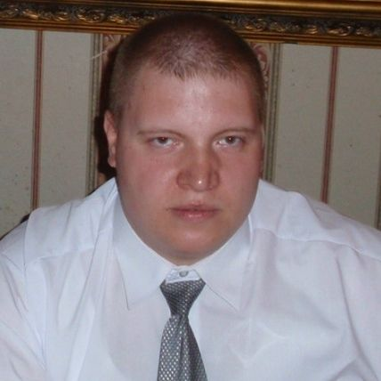

Dariusz VVardakowski
Jestem inżynierem informatykiem (2014) o specjalności bezpieczeństwo sieci i systemów.
Praktycznie zajmuję się głównie administracją i serwisem komputerów.
Dodatkowo jestem technikiem teleinformatykiem (2006).
O mnie...
Jestem inżynierem informatykiem z doświadczeniem praktycznym z wielu dziedzin IT oraz teoretycznym i zawodowym związanym z zarządzaniem systemami operacyjnymi, programowaniem skryptów shell oraz administrowaniem sieciami LAN i serwisowaniu komputerów klasy PC.
Jestem również obeznany z zagadnieniami baz danych, bezpieczeństwa sieci oraz stosowania dobrych praktyk inżynierskich w codziennej pracy w zespole IT.
Posiadam również doświadczenie w zakresie świadczenia pomocy użytkownikom komputerów oraz serwisowaniu PC.
Moim dodatkowym atutem jest znajomość nowych rozwiązań technologicznych z branży IT oraz analityczny umysł, co pozwala mi na szybkie rozwiązywanie usterek sprzętowych i problemów z działaniem oprogramowania i sieci komputerowych.Informacje
Staż
10 lat w branży:
3 lata w firmach IT
7 lat jako freelancer IT
3 lata w firmach IT
7 lat jako freelancer IT
E-mail
imię + nazwisko na gmail.com
Strona
Telefon
(48) 888 3 66 55 3
Tylko w spr. ofert pracy.
Tylko w spr. ofert pracy.
Adres
(orientacyjny)
(orientacyjny)
03-741 Warszawa, Polska
Praga Północ
Praga Północ
Umiejętności zawodowe
Administracja OS: Linux i Windows
Serwis PC: składanie, naprawa, modernizacja
Technologie Webowe: PHP, CSS, HTML
Bazy danych
Znajomość dobrych praktyk inżynierskich
Dobra organizacja pracy
Umiejętność pracy w zespole
Wielozadaniowość w czasie wykonywania obowiązków
Doświadczenie zawodowe
Technik informatyk Międzyleski Szpital Spec. w Wa-wie
Styczeń 2017 - kwiecień 2019
Opieka nad stacjami roboczymi w szpitalu (około 500 PC), system medyczny AMMS, obsługa programu do zarządzania użytkownikami telefonicznej rejestracji, helpdesk przez telefon dla odziałów szpitala
realizowanie projektu zarządzania serwerem DHCP przez plik LibreOffice
realizowanie projektu zarządzania serwerem DHCP przez plik LibreOffice
Informatyk - freelancer Prace zlecone dla klientów
Styczeń 2004 - Styczeń 2017
Prace informatyczne na zlecenie klientów. Sprzęt, sieci, doradctwo, serwis, helpdesk.
Technik informatyk XPCOM i Budexpans
Pażdziernik 2008 - Kwiecień 2010
Praca w dziale informatyki firmy budowlanej zlecone prace - serwis komputerów, opieka nad serwerownią firmy, opieka nad serwerem firmowym działu IT
Wykształcenie
Inżynier Informatyk WWSI Warszawa (2014)
2010 - 2014
Specjalność Inż. Bezp. Sieci i Systemów Komp.
Technik Informatyk Nova Centrum Edu (2006)
2004 - 2006
Specjalność: Teleinformatyka
Liceum Ogólnokształcące LON37 (2001)
1997 - 2001
Uczestnictwo w szkolnym kole zainteresowań - informatyka.
Kontakt
(48) 888 3 66 55 3
Tylko w sprawie ofert pracy.
Tylko w sprawie ofert pracy.
imię + nazwisko na gmail.com